A Two Tank System - Single-Input Single-Output Nonlinear ARX and Hammerstein-Wiener Models
In this demo we illustrate the basic commands of System Identification Toolbox™ for the development of single-input-single-output (SISO) nonlinear black box models from data.
Contents
- The Data Set Used in This Demo
- Plotting the Data
- Splitting the Data
- Model Order Selection
- Nonlinear ARX (IDNLARX) Models
- Playing with Model Properties
- Nonlinear Regressors of IDNLARX Model
- Automatic Search for Nonlinear Regressors
- Evaluating Estimated Models
- Nonlinear ARX Model with SIGMOIDNET Nonlinearity Estimator
- Other Nonlinearity Estimators in IDNLARX Model
- Using the Network Object from Neural Network ToolBox™ (NNTB)
- Hammerstein-Wiener (IDNLHW) Models
- Hammerstein-Wiener Model with the Piecewise Linear Nonlinearity Estimator
- Hammerstein-Wiener Model with Saturation and Dead Zone Nonlinearities
- Hammerstein-Wiener Model - Specifying More Properties
- Hammerstein-Wiener Model - Use Other Nonlinearity Estimators
- Additional Information
The Data Set Used in This Demo
Throughout this demo, examples will be made with the data saved in the file twotankdata.mat. It contains 3000 input-output data samples of a two tank system generated at a sampling rate of 0.2 second. The input u(t) is the voltage [V] applied to a pump, which generates an inflow to the upper tank. A rather small hole at the bottom of this upper tank yields an outflow that goes into the lower tank, and the output y(t) of the two tank system is then the liquid level [m] of the lower tank. We create an IDDATA object z to hold the loaded data:
This data set is also used in the nonlinear grey box demo idnlgreydemo2 where physical equations describing the system are assumed. This demo is about black box models, thus no physical equation is assumed.
load twotankdata z = iddata(y, u, 0.2, 'Name', 'Two tank system');
Plotting the Data
Let us plot the whole 3000 samples of data, for the time ranging from 0 to 600 seconds.
The input is a multi-step signal with various levels.
plot(z)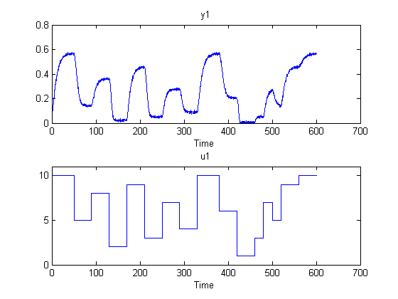
Splitting the Data
Split this data set into 3 subsets of equal size, each containing 1000 samples.
According to the data plot, the input and output signals of z2 (the middle third of the plot) is similar to the signals of z1, but those of z3 are quite different, slightly beyond the input and output ranges of z1.
We shall estimate models with z1, and evaluate them on z2 and z3. In some sense, z2 allows to evaluate the interpolation ability of the models, and z3 allows to evaluate their extrapolation ability to some extent.
z1 = z(1:1000); z2 = z(1001:2000); z3 = z(2001:3000);
Model Order Selection
The first step in estimating nonlinear black box models is to choose model orders. For an IDNLARX model, Orders = [na nb nk], defining the numbers of past outputs, past inputs and the input delay used to predict the current output.
Usually model orders are chosen by trials and errors. Sometimes it is useful to try linear ARX models first in order to get hints about model orders. So let us first try the tool for linear ARX model orders selection.
V = arxstruc(z1,z2,struc(1:5, 1:5,1:5)); nn = selstruc(V,'aic') % selection of nn=[na nb nk] by Akaike's information criterion (AIC)
nn =
5 1 3
The AIC criterion has selected nn = [na nb nk] = [5 1 3], meaning that, in the selected ARX model structure, y(t) is predicted by the 6 regressors y(t-1),y(t-1),...,y(t-5) and u(t-3). We will try to use these values in nonlinear models.
Nonlinear ARX (IDNLARX) Models
In an IDNLARX model, the model output is a nonlinear function of regressors, like model_output(t) = F(y(t-1),y(t-1),...,y(t-5), u(t-3)).
IDNLARX models are typically estimated with the syntax:
M = NLARX(Data, Orders, Nonlinearity).
It is similar to the linear ARX command, with the additional argument Nonlinearity specifying the type of nonlinearity estimator.
To estimate an IDNLARX model, after the choice of model orders, we should choose the nonlinearity estimator to be used. Let us first try the WAVENET estimator.
mw1 = nlarx(z1,[5 1 3], wavenet);
The number of units (wavenet functions) in the WAVENET estimator has been automatically chosen. It can be accessed as shown below.
mw1.Nonlinearity.NumberOfUnits
ans =
3
Examine the result by comparing the output simulated with the estimated model and the output in the estimation data z1:
compare(z1,mw1);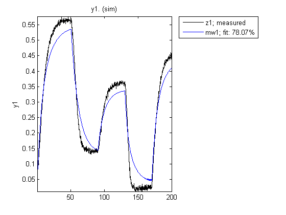
Playing with Model Properties
The first model was not quite satisfactory, so let us try to modify some properties of the model. Instead of letting the estimation algorithm automatically choose the number of units in the WAVENET estimator, this number can be explicitly specified.
mw2 = nlarx(z1,[5 1 3], wavenet('NumberOfUnits',8));
Default InputName and OutputName have been used.
mw2.InputName mw2.OutputName
ans =
'u1'
ans =
'y1'
The regressors of the IDNLARX model can be viewed with the command getreg. It returns strings made from mw2.InputName, mw2.OutputName and time delays.
getreg(mw2)
Regressors:
y1(t-1)
y1(t-2)
y1(t-3)
y1(t-4)
y1(t-5)
u1(t-3)
Nonlinear Regressors of IDNLARX Model
An important property of IDNLARX models is NonlinearRegressors. The output of an IDNLARX model is a function of regressors. Usually this function has a linear block and a nonlinear block. The model output is the sum of the outputs of the two blocks. In order to reduce model complexity, a subset of regressors can be chosen to enter the nonlinear block. These regressors are referred to as "nonlinear regressors".
Nonlinear regressors can be specified as a vector of regressor indices in the order of the regressors returned by GETREG. For the example of mw2, the entire list of regressors is displayed below, and NonlinearRegressors=[1 2 6] corresponds to y1(t-1), y1(t-2) and u1(t-3) in the following list.
getreg(mw2)
Regressors:
y1(t-1)
y1(t-2)
y1(t-3)
y1(t-4)
y1(t-5)
u1(t-3)
Nonlinear regressors can be indicated by the Property-Value pair as in the following example. Notice the short-hand 'nlreg'='NonlinearRegressors'.
mw3 = nlarx(z1,[5 1 3], wavenet, 'NonlinearRegressors', [1 2 6]); mw3 = nlarx(z1,[5 1 3], wavenet, 'nlreg', [1 2 6]); % using short-hand notation getreg(mw3, 'nonlinear') % get nonlinear regressors
Nonlinear regressors:
y1(t-1)
y1(t-2)
u1(t-3)
Instead of regressor indices, some keyword strings can also be used to indicate nonlinear regressors: 'input' for regressors consisting of delayed inputs, and 'output' for regressors consisting of delayed outputs. In the following example, 'input' indicates the only input regressor u1(t-3).
mw4 = nlarx(z1,[5 1 3], wavenet, 'nlreg', 'input'); mw4.nlreg % 'nlreg' is the short-hand of 'NonlinearRegressors' getreg(mw4, 'nonlinear') % get nonlinear regressor
ans =
6
Nonlinear regressors:
u1(t-3)
Automatic Search for Nonlinear Regressors
To automatically try all the possible subsets of regressors as nonlinear regressors and to choose the one resulting in the lowest simulation error, use the value NonlinearRegressors='search'. This exhaustive search usually takes a long time. It is recommended to turn on the iteration display when using the search option.
This example may take some time..
mws = nlarx(z1,[5 1 3], wavenet, 'nlreg', 'search','display', 'on');
Searching for best nonlinear regressors Tested regressor combinations: 64/64 Selecting wavelets: 100%
The result of the search can be accessed in mws.nlreg The resulting value mws.nlreg=[4 6] means that the 4th and 6th regressors are nonlinear in the following list of regressors. In other words, y1(t-4) and u1(t-3) are used as nonlinear regressors.
mws.nlreg getreg(mws)
ans =
4 6
Regressors:
y1(t-1)
y1(t-2)
y1(t-3)
y1(t-4)
y1(t-5)
u1(t-3)
Evaluating Estimated Models
Different models, both linear and nonlinear, can be compared together in the same COMPARE command.
mlin = arx(z1,[5 1 3]); compare(z1,mlin,mw2,mws);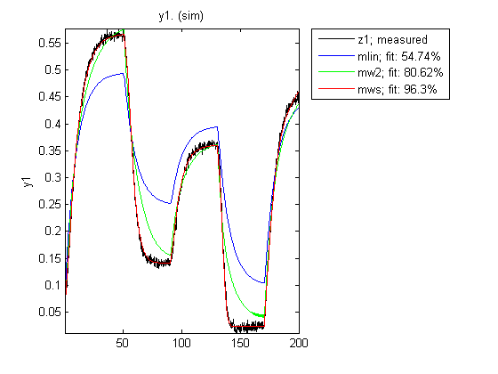
Now let us see how mws behaves on the data set z2.
compare(z2,mws);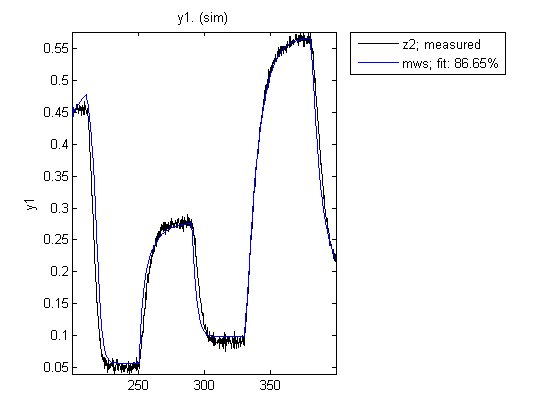
and on the data set z3.
compare(z3,mws);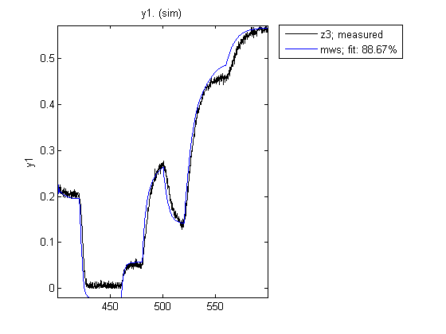
Function PLOT may be used to view the nonlinearity responses of various IDNLARX models.
plot(mw2,mws) % plot nonlinearity response as a function of selected regressors
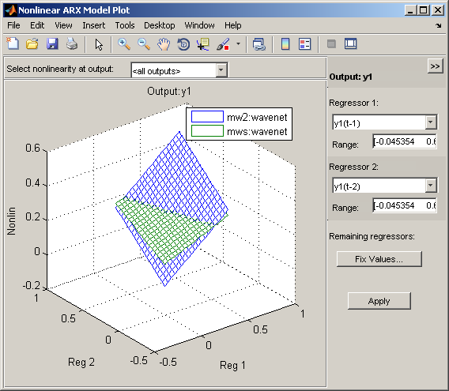 Nonlinear ARX Model with SIGMOIDNET Nonlinearity Estimator
At the place of WAVENET, other nonlinearity estimators can be used. Try the SIGMOIDNET estimator.
ms1 = nlarx(z1,[5 1 3], sigmoidnet('NumberOfUnits', 8));
compare(z1,ms1)

Now evaluate the new model on the data set z2.
compare(z2,ms1);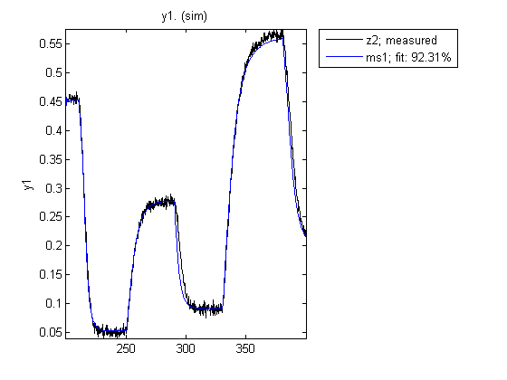
and on the data set z3.
compare(z3,ms1);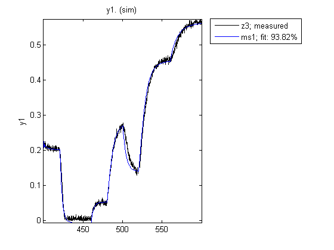
Other Nonlinearity Estimators in IDNLARX Model
CUSTOMNET is similar to SIGMOIDNET, but instead of the sigmoid unit function, the user can define other unit functions in MATLAB files. This example uses the gaussunit function defined in the function gaussunit.m (type "which gaussunit" to locate it and examine its content).
TREEPARTITION is another nonlinearity estimator.
mc1 = nlarx(z1,[5 1 3], customnet(@gaussunit),'nlreg',[3 5 6]);
mt1 = nlarx(z1,[5 1 3], treepartition);
Using the Network Object from Neural Network ToolBox™ (NNTB)
Neural networks created with the aid of the NNTB can also be used. This requires NNTB license.
Here, we will create a single-output network with an unknown number of inputs (denote by input size of zero in the network object). The number of inputs is set to the number of regressors (as determined by model orders) in the IDNLARX model during the estimation process automatically.
Compare responses of models mc1 and mt1 to data z1
compare(z1, mc1, mt1) if isnntbinstalled % This example is run only if the NNTB license is available. ff = feedforwardnet([5 20]); ff.layers{2}.transferFcn = 'radbas'; ff.trainParam.epochs = 50; mn1 = nlarx(z1,[5 1 3], neuralnet(ff)); %estimation with neuralnet nonlinearity compare(z1, mn1) % compare fit to estimation data end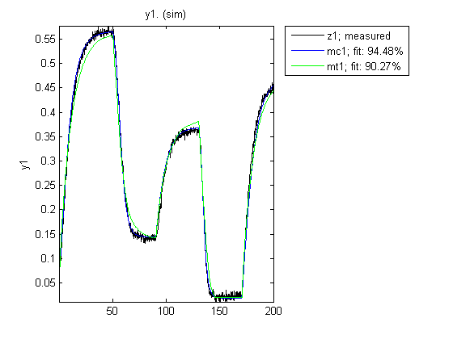
Hammerstein-Wiener (IDNLHW) Models
A Hammerstein-Wiener model is composed of up to 3 blocks: a linear transfer function block is preceded by a nonlinear static block and/or followed by another nonlinear static block. It is called a Wiener model if the first nonlinear static block is absent, and a Hammerstein model if the second nonlinear static block is absent.
IDNLHW models are typically estimated with the syntax:
M = NLHW(Data, Orders, InputNonlinearity, OutputNonlinearity).
where Orders=[nb bf nk] specifies the orders and delay of the linear transfer function, InputNonlinearity and OutputNonlinearity specify the nonlinearity estimators for the two nonlinear blocks. The linear output error (OE) model corresponds to the case of trivial identity nonlinearities.
Hammerstein-Wiener Model with the Piecewise Linear Nonlinearity Estimator
The PWLINEAR (piecewise linear) nonlinearity estimator is useful in general IDNLHW models.
Notice that, in Orders=[nb nf nk], nf specifies the number of poles of the linear transfer function, somewhat related to the na of the IDNLARX model
mhw1 = nlhw(z1, [1 5 3], pwlinear, pwlinear);
The result can be evaluated with COMPARE as before.
figure('color','w'); % new figure to show subsequent plots compare(z1,mhw1)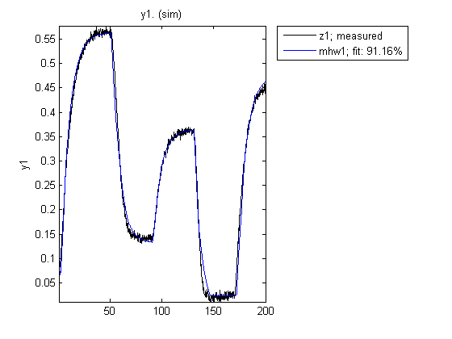
Model properties can be visualized by the PLOT command.
Click on the block-diagram to choose the view of the input nonlinearity (UNL), the linear block or the output nonlinearity (YNL).
For the linear block, it is possible to choose the type of plots within Step response, Bode plot, Impulse response and Pole-zero map.
plot(mhw1)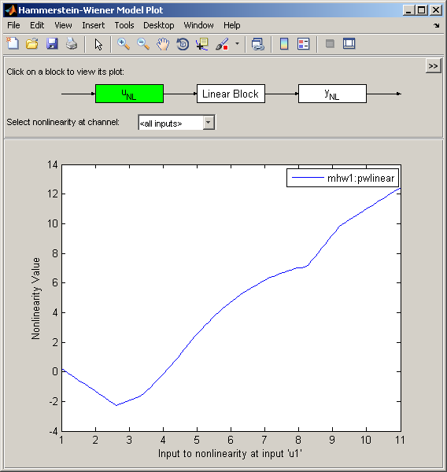
The break points of the two piecewise linear estimators can be examined (notice that the short-hands 'u'='Input', 'y'='Output', 'nl'='Nonlinearity' can be used). This is a two row matrix, the first row corresponds to the input and the second row to the output of the PWLINEAR estimator.
mhw1.unl.BreakPoints
ans =
Columns 1 through 7
2.6073 3.3830 4.1587 4.9344 5.6303 6.3579 7.0856
-2.2733 -1.5995 0.2091 2.4009 4.0369 5.3484 6.2980
Columns 8 through 10
7.8132 8.2530 9.2085
6.9232 7.1274 9.8419
Hammerstein-Wiener Model with Saturation and Dead Zone Nonlinearities
The SATURATION and DEADZONE estimators can be used if such nonlinearities are supposed to be present in the system.
mhw2 = nlhw(z1, [1 5 3], deadzone, saturation); compare(z1,mhw2)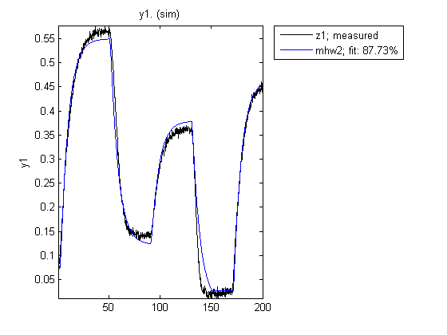
The absence of a nonlinearity is indicated by the UNITGAIN object, or by the empty "[]" value. Abbreviated strings of the names of nonlinearity estimators can be used.
mhw3 = nlhw(z1, [1 5 3], 'dead',unitgain); mhw4 = nlhw(z1, [1 5 3], [],'satur');
The limit values of DEADZONE and SATURATION can be respectively examined.
mhw2.unl.ZeroInterval mhw2.ynl.LinearInterval
ans =
0.9856 3.5657
ans =
0.0274 0.5660
The initial guess of ZeroInterval for DEADZONE or LinearInterval for SATURATION can be indicated in the estimators:
mhw5 = nlhw(z1, [1 5 3], deadzone([0.1 0.2]), saturation([-1 1]));
Hammerstein-Wiener Model - Specifying More Properties
The estimation algorithm options, stored in the structure Model.Algorithm, can be directly specified during estimation.
mhw6 = nlhw(z1, [1 5 3], deadzone, saturation, 'maxiter', 3, 'SearchMethod', 'gna');
An already estimated model can be refined by more estimation iterations
Evaluated on the estimation data z1, mhw7 should have a better fit than mhw6.
mhw7 = nlhw(z1,mhw6); compare(z1, mhw6, mhw7)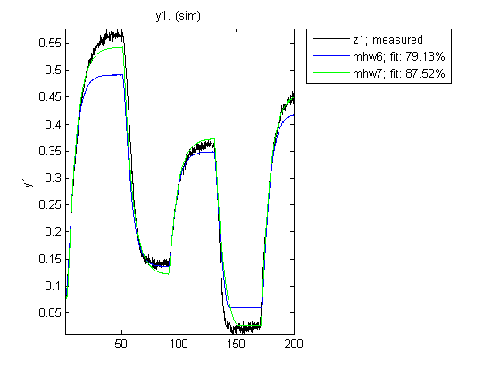
Hammerstein-Wiener Model - Use Other Nonlinearity Estimators
The nonlinearity estimators PWLINEAR, SATURATION and DEADZONE have been mainly designed for use in IDNLHW models. They can only estimate single variable nonlinearities. The other more general nonlinearity estimators, SIGMOIDNET, CUSTOMNET and WAVENET, can also be used in IDNLHW models. However, the non differentiable estimators TREEPARTITION and NEURALNET are not applicable, because the estimation of IDNLHW models needs the derivatives of the nonlinearity estimators in iterative algorithms. See "idprops idnlestimators" for a summary of nonlinearity estimators.
Additional Information
For more information on identification of dynamic systems with System Identification Toolbox visit the System Identification Toolbox product information page.